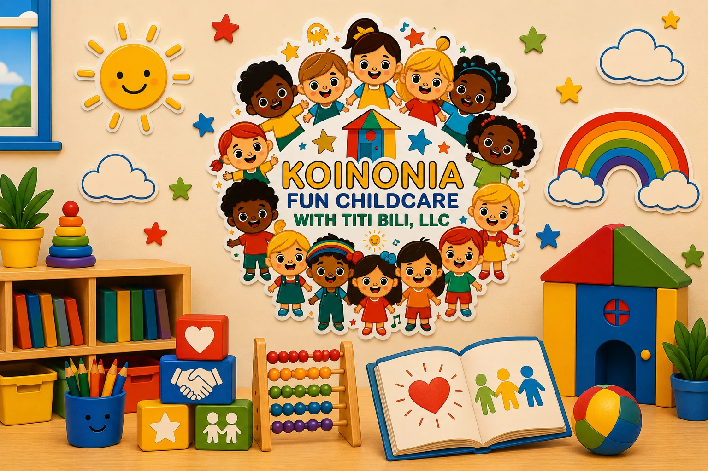

The Importance of Socialization in Early Childhood
During the early years of life, children begin learning how to relate to other people. Socialization helps them develop confidence, communication, empathy, and skills that will be important in school, family life, and their community.

1. Helps Develop Communication Skills
By interacting with other children and adults, young children learn how to express ideas, needs, and emotions. They also begin learning how to listen, respond, and participate in simple conversations.
2. Builds Confidence
Interacting in a safe environment allows children to feel more comfortable participating, asking for help, trying new activities, and forming positive relationships.
3. Teaches Sharing and Taking Turns
Group activities help children understand concepts such as waiting, sharing materials, cooperating, and respecting the space of others.
4. Encourages Empathy
Daily interaction allows children to recognize emotions in other people. Over time, they learn how to comfort, help, and respond thoughtfully to the needs of others.
5. Prepares Children for School
Children who participate in structured social environments often adapt more easily to school routines, group activities, and classroom expectations.
6. Promotes Learning Through Play
Shared play allows children to practice language, imagination, problem-solving, and cooperation in a natural and enjoyable way.
Final Thoughts
Socialization is about much more than simply playing with other children. It is an essential part of emotional, communication, and social development. When children interact in a loving and guided environment, they learn skills that will benefit them throughout their lives.
Looking for a place where your child can socialize and learn?
At Koinonia Fun Childcare, we provide a safe, loving, and educational environment where children build friendships, confidence, and important social skills that support healthy development.